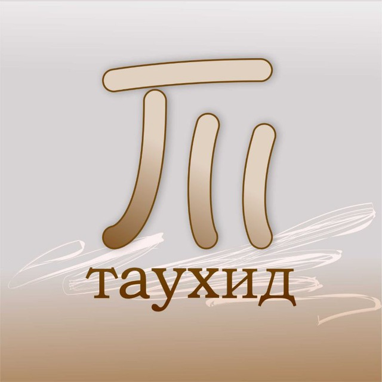

Вход не выполнен.
Пароля нет: на почту приходит ссылка, по ней и происходит вход. Регистрация закрыта — ссылка сработает только для владельца библиотеки.
Публичные книги открыты всем и без входа. Вход нужен для книг, которых нет в общем каталоге.
Считаются только числа — без cookie, без адресов и без номера устройства. «Читатели» — устройства, впервые открывшие запись: один человек с телефона и компьютера — это двое. «Дочитали» — устройства, дошедшие до конца. Счёт идёт с включения счётчика.
Машинный перевод выделенного фрагмента. Он не становится частью книги — показывается отдельной карточкой и подписан как машинный.
Ключ хранится только в этом браузере (localStorage) и в резервную копию настроек не попадает. На другом устройстве его надо вставить заново. Заведите отдельный ключ с потолком трат — тогда даже при утечке потери ограничены.
Список берётся с самого OpenRouter, поэтому в нём всегда актуальные модели и цены (за миллион токенов). Платит владелец ключа — то есть вы.
Промпт — своя команда ИИ. Выбирается прямо в карточке перевода, так что один и тот же фрагмент можно переспросить по-разному. Встроенные менять нельзя, свои — сколько угодно.
Есть два вида команд, и различает их слово {текст}:

Параллельная читалка.
Чтение книг на двух языках, выровненных по смысловым секторам: оригинал и перевод рядом, сноски, сканы страниц, самопроверка.
Автор и издатель переводов: Алькасави (qaadiy)
Связь, замечания, заказ книг: qaadiy@gmail.com
Библиотека считает только, сколько раз открывают статьи и книги, — без cookie и без слежки: кто именно читал, не знает никто.